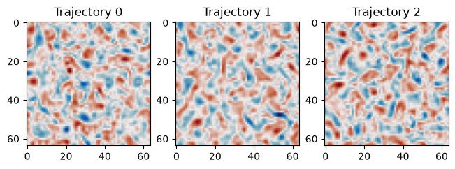
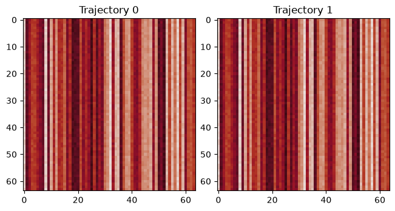
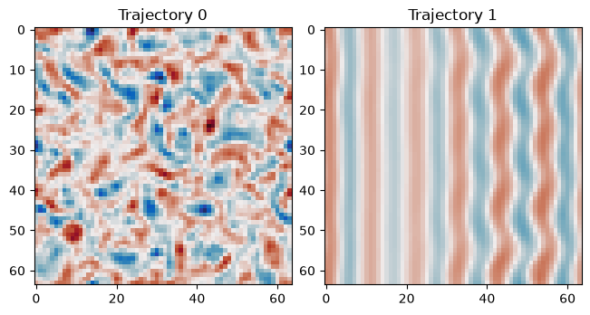

Batches of Trajectories
Because the models and time steppers are fully implemented in JAX we
can use various transforms to manipulate the models and trajectories.
In this example we use jax.vmap() to run several trajectories at
once.
If you are running on a GPU using small state dimensions, batching several trajectories can make better use of your GPU’s compute capacity.
%env JAX_ENABLE_X64=True
import functools
import matplotlib.pyplot as plt
import cmocean.cm as cmo
import jax
import jax.numpy as jnp
import pyqg_jax
env: JAX_ENABLE_X64=True
We begin by setting up a time stepped model as in the basic time stepping example:
model = pyqg_jax.steppers.SteppedModel(
model=pyqg_jax.qg_model.QGModel(
nx=64,
ny=64,
precision=pyqg_jax.state.Precision.DOUBLE,
),
stepper=pyqg_jax.steppers.AB3Stepper(dt=14400.0),
)
Next we can use vmap to create our initial states from a stack of
key objects:
# Split one initial RNG key into three, then stack and vmap
init_rngs = jnp.stack(jax.random.split(jax.random.key(0), 3))
init_states = jax.vmap(model.create_initial_state)(init_rngs)
init_states
AB3State(
t=f32[3],
tc=u32[3],
state=PseudoSpectralState(qh=c128[3,2,64,33]),
)
Note the leading dimension of size 3, one for each initial configuration.
We include our roll_out_state function that we used for basic
stepping, but we apply vmap before jit, making sure to specify
that the num_steps argument should not be batched.
This time, however, we modify our scan loop to keep only the final
state.
@functools.partial(jax.jit, static_argnames=["num_steps"])
@functools.partial(jax.vmap, in_axes=(0, None))
def roll_out_state(state, num_steps):
def loop_fn(carry, _x):
current_state = carry
next_state = model.step_model(current_state)
return next_state, None
final_state, _ = jax.lax.scan(
loop_fn, state, None, length=num_steps
)
return final_state
We can now roll out all three trajectories at the same time:
# Note that the vmap decorator prevents passing num_steps
# as a keyword argument
final_steps = roll_out_state(init_states, 7500)
final_steps
AB3State(
t=f32[3],
tc=u32[3],
state=PseudoSpectralState(qh=c128[3,2,64,33]),
)
Note that we now have three final states, one for each trajectory in the batch.
Note
Note that vmap causes us to be unable to pass num_steps as a
keyword/named argument (see
JAX#7465).
We can plot each of their final steps:
final_q = final_steps.state.q
vmax = jnp.abs(final_q[:, 0]).max()
fig, axs = plt.subplots(1, final_q.shape[0], layout="constrained")
for i, (single_q, ax) in enumerate(zip(final_q, axs)):
ax.set_title(f"Trajectory {i}")
ax.imshow(single_q[0], cmap=cmo.balance, vmin=-vmax, vmax=vmax)

Notice that each trajectory has evolved separately and produced a unique state.
Batching Models
Because both the states and models are JAX objects, it is also possible to run multiple models in a vmap.
reks = jnp.array([5.787e-7, 7e-08])
deltas = jnp.array([0.25, 0.1])
betas = jnp.array([1.5e-11, 1e-11])
def make_model(rek, delta, beta):
model = pyqg_jax.steppers.SteppedModel(
model=pyqg_jax.qg_model.QGModel(
nx=64,
ny=64,
precision=pyqg_jax.state.Precision.DOUBLE,
rek=rek,
delta=delta,
beta=beta,
),
stepper=pyqg_jax.steppers.AB3Stepper(dt=14400.0),
)
return model
models = jax.vmap(make_model)(reks, deltas, betas)
models
SteppedModel(
model=QGModel(
nx=64,
ny=64,
L=f64[2],
W=f64[2],
rek=f64[2],
filterfac=f64[2],
f=None,
g=f64[2],
beta=f64[2],
rd=f64[2],
delta=f64[2],
H1=i64[2],
U1=f64[2],
U2=f64[2],
precision=<Precision.DOUBLE: 2>,
),
stepper=AB3Stepper(dt=f64[2]),
)
Note
You can vary parameters between the models in a batch except for
parameters which affect the shape or dtype of the values. In
particular nx, ny, nz, and precision must be the same in each
member of the ensemble.
The batched model’s methods must be called inside a vmap in order to
function properly. We run both models on the same initial state.
def make_initial_state(model, rng):
return model.create_initial_state(rng)
# Call the function with a constant RNG key (seeded to zero) but different stacked models.
# It would also be possible to provide different RNG keys for each model as was done above.
batch_state = jax.vmap(functools.partial(make_initial_state, rng=jax.random.key(0)))(
models
)
batch_state
AB3State(
t=f32[2],
tc=u32[2],
state=PseudoSpectralState(qh=c128[2,2,64,33]),
)
The leading dimension of size 2 is the batch dimension. We can now
set up our code to roll these out, each with a separate model.
Both initial states are identical:
vmax = jnp.abs(batch_state.state.q[:, 0]).max()
fig, axs = plt.subplots(1, batch_state.state.q.shape[0], layout="constrained")
for i, (single_q, ax) in enumerate(zip(batch_state.state.q, axs)):
ax.set_title(f"Trajectory {i}")
ax.imshow(single_q[0], cmap=cmo.balance, vmin=-vmax, vmax=vmax)

We now rework our roll_out_state function to accept the models as an
additional argument and use vmap to add the batch dimension.
@functools.partial(jax.jit, static_argnames=["num_steps"])
@functools.partial(jax.vmap, in_axes=(0, 0, None))
def roll_out_batch_models(model, state, num_steps):
def loop_fn(carry, _x):
current_state = carry
next_state = model.step_model(current_state)
return next_state, None
final_state, _ = jax.lax.scan(
loop_fn, state, None, length=num_steps
)
return final_state
batch_model_final = roll_out_batch_models(
models, batch_state, 7500
)
batch_model_final
AB3State(
t=f32[2],
tc=u32[2],
state=PseudoSpectralState(qh=c128[2,2,64,33]),
)
Plotting the final steps shows the impact of the different model parameters, we see that the second model has produced a trajectory that has not yet finished warmup.
final_q = batch_model_final.state.q
vmax = jnp.abs(batch_model_final.state.q[:, 0]).max()
fig, axs = plt.subplots(1, batch_model_final.state.q.shape[0], layout="constrained")
for i, (single_q, ax) in enumerate(zip(batch_model_final.state.q, axs)):
ax.set_title(f"Trajectory {i}")
ax.imshow(single_q[0], cmap=cmo.balance, vmin=-vmax, vmax=vmax)
